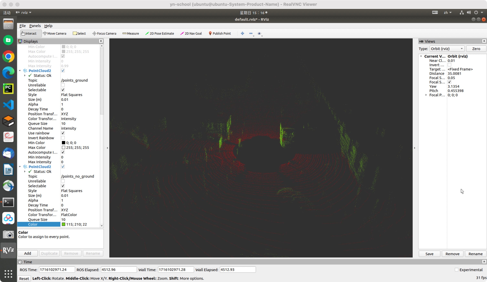

本篇文章将对地面点筛选进行进一步研究，以部署到无人机上。
参考代码：plane_fit_ground_filter
Set Up
首先git到本地文件夹：
cd home/ubuntu/yn/SLAM/Dynamic_Object_Removing/my_catkin_ws/src/
git clone https://github.com/AbangLZU/plane_fit_ground_filter.git
cd ..
catkin build plane_ground_filter
source devel/setup.bash
并且下载好对应的实验数据集存放于/home/ubuntu/yn/SLAM/Dynamic_Object_Removing/Dataset/gournd_filter/kitti_2011_09_26_drive_0005_synced.bag
接着，分别开四个终端进行运行：
# terminal-1
roscore
# terminal-2
rosrun rviz rviz
# terminal-3
rosbag play /home/ubuntu/yn/SLAM/Dynamic_Object_Removing/Dataset/gournd_filter/kitti_2011_09_26_drive_0005_synced.bag --loop
# terminal-4 (in "home/ubuntu/yn/SLAM/Dynamic_Object_Removing/my_catkin_ws/")
roslaunch plane_ground_filter plane_ground_filter.launch
然而发现rviz并没有输出，因此需要对rviz进行改动：
- 在rviz的
Global Options中，设置Fixed Frame = base_link；

- 在rviz的
Display中，添加PointCloud2，并将其中的订阅的topic设为/kitti/velo/pointcloud；

此时便可以看到rviz出现了输出：

然而点云并没有具体的颜色信息，发现在进行roslaunch时出现如下问题：

可见，未能正确识别传入点云的intensity和ring信息。
然而经过探索后，发现rviz是可以接收到intensity信息的：当将PointCloud2中的Channel Name改为i后，可以看到此时有了强度信息，而原始的默认情况下，Channel Name = intensity，对比如下：
定位到代码中最开始的ros消息点云格式转换为pcl点云格式的部分：
// 1.Msg to pointcloud
pcl::PointCloud<VPoint> laserCloudIn;
pcl::fromROSMsg(*in_cloud_ptr, laserCloudIn);
猜测错误发生在自定义的pcl点云类型VPoint中，找到其定义如下：
namespace velodyne_pointcloud
{
/** Euclidean Velodyne coordinate, including intensity and ring number. */
struct PointXYZIR
{
PCL_ADD_POINT4D; // quad-word XYZ
float intensity; ///< laser intensity reading
uint16_t ring; ///< laser ring number
EIGEN_MAKE_ALIGNED_OPERATOR_NEW // ensure proper alignment
} EIGEN_ALIGN16;
}; // namespace velodyne_pointcloud
POINT_CLOUD_REGISTER_POINT_STRUCT(velodyne_pointcloud::PointXYZIR,
(float, x, x)(float, y, y)(float, z, z)(float, intensity, intensity)(uint16_t, ring, ring))
#define VPoint velodyne_pointcloud::PointXYZIR
可以看到VPoint即为velodyne_pointcloud::PointXYZIR，是传统的pcl点云类型PCL_ADD_POINT4D与强度intensity和线束ring信息拼接而成。
进而推测是由于录制的包中，点云强度信息和线束信息的名称与这里的不相符，因此尝试将强度intensity修改为i：
namespace velodyne_pointcloud
{
/** Euclidean Velodyne coordinate, including intensity and ring number. */
struct PointXYZIR
{
PCL_ADD_POINT4D; // quad-word XYZ
float i; ///< laser intensity reading
uint16_t ring; ///< laser ring number
EIGEN_MAKE_ALIGNED_OPERATOR_NEW // ensure proper alignment
} EIGEN_ALIGN16;
}; // namespace velodyne_pointcloud
POINT_CLOUD_REGISTER_POINT_STRUCT(velodyne_pointcloud::PointXYZIR,
(float, x, x)(float, y, y)(float, z, z)(float, i, i)(uint16_t, ring, ring))
#define VPoint velodyne_pointcloud::PointXYZIR
此时显示如下：
可以看到，已经解决了无法检测到intensity的问题，接下来尝试将ring改为r：
namespace velodyne_pointcloud
{
/** Euclidean Velodyne coordinate, including intensity and ring number. */
struct PointXYZIR
{
PCL_ADD_POINT4D; // quad-word XYZ
float i; ///< laser intensity reading
uint16_t r; ///< laser ring number
EIGEN_MAKE_ALIGNED_OPERATOR_NEW // ensure proper alignment
} EIGEN_ALIGN16;
}; // namespace velodyne_pointcloud
POINT_CLOUD_REGISTER_POINT_STRUCT(velodyne_pointcloud::PointXYZIR,
(float, x, x)(float, y, y)(float, z, z)(float, i, i)(uint16_t, r, r))
#define VPoint velodyne_pointcloud::PointXYZIR
然而这样虽然不再显示错误，但是得到的点的r均为0：
然而发现这一切都不是问题：由于我们代码中并没有用到点云的intensity和ring信息，因此只需要观察输出就好。
在rviz中新增两个PointCloud2的展示，分别订阅代码发布的话题/points_no_ground和/points_ground，将其合并输出：

其中我们将地面点标为红色，将非地面点标记为绿色。
NTU Dataset
在link-1中找到其无人机数据集下载，选择室内数据集nya_01进行处理。下载解压后文件夹格式如下：
├── nya_01
│ │── camera_left.yaml
│ │── camera_right.yaml
│ │── imu_v100.yaml
│ │── leica_prism.yaml
│ │── lidar_horz.yaml
│ │── lidar_vert.yaml
│ │── uwb_nodes.yaml
│ │── nya_01.bag
通过以下命令播放nya_01包：
# terminal-1
roscore
# terminal-2
rosrun rviz rviz
# terminal-3
rosbag play nya_01.bag --loop
我们得到相关信息为：
接着添加PointCloud2：令其topic=/os1_cloud_node1/points，然而rviz却报错：Displays/Global Options/Fixed Frame为map时，无法获得相应的数据。
我们采用一下方法得到发布点云的frame_id：
$ rostopic list
/clicked_point
/clock
/dji_sdk/attitude
/dji_sdk/gps_health
/dji_sdk/gps_position
/dji_sdk/height_above_takeoff
/dji_sdk/imu
/imu/imu
/imu/magnetic_field
/imu/temperature
/initialpose
/left/image_raw
/leica/pose/relative
/move_base_simple/goal
/node_pos_marker_sc
/node_pos_sc
/os1_cloud_node1/imu
/os1_cloud_node1/points
/os1_cloud_node2/imu
/os1_cloud_node2/points
/right/image_raw
/rosout
/rosout_agg
/tf
/tf_static
/uwb_endorange_info
/uwb_exorange_info
$ rostopic echo /os1_cloud_node1/points | grep frame_id
frame_id: "sensor1/os_sensor"
frame_id: "sensor1/os_sensor"
frame_id: "sensor1/os_sensor"
frame_id: "sensor1/os_sensor"
frame_id: "sensor1/os_sensor"
frame_id: "sensor1/os_sensor"
frame_id: "sensor1/os_sensor"
frame_id: "sensor1/os_sensor"
frame_id: "sensor1/os_sensor"
frame_id: "sensor1/os_sensor"
frame_id: "sensor1/os_sensor"
frame_id: "sensor1/os_sensor"
frame_id: "sensor1/os_sensor"
frame_id: "sensor1/os_sensor"
...
接着将Displays/Global Options/Fixed Frame改为````sensor1/os_sensor```，此时便得到输出，但是点云数据十分稀疏：
通过改变Display中PointLoud2的size，将其变为0.1m，得到直观点云的俯视图：
然而Outster类型的Lidar的扫描方式和别的不同。
Granary Dataset